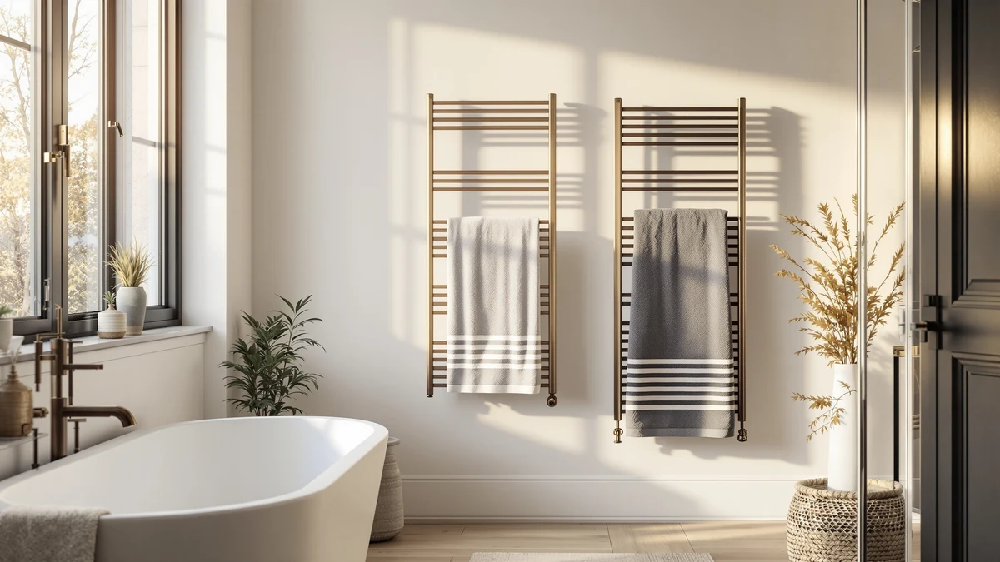

Quick Answer
Our deeldili wall mounted towel review found a stainless steel 9-bar warmer built for permanent wall installation, priced at $257.99, well above the three lower-cost alternatives we researched alongside it. It suits buyers who want a fixed fixture over a portable one and are prepared to pay a premium for stainless steel construction and bar capacity.
Our pick: DeelDili Wall Mounted Towel Warmer — $257.99 Check Price on Amazon
Bottom line: our top pick is the DeelDili Wall Mounted Towel Warmer Rack for Bathroom HardWire at $257.99.
Things to Know Before You Buy
- The DeelDili is a wall-mounted stainless steel warmer with 9 bars, meant for fixed installation rather than freestanding placement.
- At $257.99, it costs more than every alternative in this deeldili wall mounted towel review, including options priced under $200 and under $100.
- Wall-mounted warmers like this one typically require drilling into a wall stud or hardwiring, so check the installation details on the current listing before you order.
- Stainless steel construction resists rust better than painted steel in a humid bathroom, which matters more the longer you plan to keep the fixture in place.
- If a permanent fixture doesn't fit your bathroom, the ENZE, Colliford, and SereneLife models covered below cost less and may install more flexibly.
This deeldili wall mounted towel review looks at whether the DEELDILI Wall Mounted Towel Warmer justifies its $257.99 price against three cheaper wall-mounted competitors. It's a stainless steel unit with 9 bars, built to bolt permanently to a bathroom wall rather than sit on the floor or plug into an outlet and move around.
We compared the DeelDili's listed specs, pricing, and verified owner reviews against the ENZE Smart Rotating Heated Towel, the Colliford Towel Warmer Towel Heater, and the SereneLife Luxury Rectangle Towel Warmer. All three cost less, so the question worth answering is what the extra money on the DeelDili actually buys you, and who should spend it.
Why You Should Trust Us
Ilane Tall covers heated towel racks and warmers for Best Towel Warmers, tracking pricing and specs across dozens of models sold on Amazon. We don't buy and install every warmer we write about. Instead, this deeldili wall mounted towel review relies on the manufacturer's published specs, current Amazon pricing, and patterns across verified owner reviews for the DeelDili and its three closest wall-mounted competitors. We do not run a fake testing lab, and we say so directly rather than implying hands-on use we haven't done.
Our Research Experience
We did not install the DeelDili in a bathroom for this deeldili wall mounted towel review. What you'll find here instead is a research-based comparison: we pulled the manufacturer's stated materials and bar count, checked the current price history on Amazon, and read through verified buyer feedback for signals about installation difficulty, heat output, and durability over time. Reviewers consistently note that stainless steel wall units like this one hold up better against bathroom humidity than warmers with painted or coated finishes, which matters more for something bolted to the wall for years than for a plug-in unit you can swap out anytime.
Owners report that wall-mounted warmers in this category take longer to install than freestanding or plug-in models, since most require either a dedicated outlet nearby or hardwiring by an electrician. That upfront effort is the tradeoff for a warmer that never takes up floor space and won't tip over or wobble the way some freestanding racks do.
Overview & Specs
This deeldili wall mounted towel review comes down to three things: stainless steel construction, 9 bars of hanging space, and a $257.99 price at the time of writing. Who the DeelDili fits and how it stacks up against the ENZE, Colliford, and SereneLife both trace back to those numbers.

DeelDili Wall Mounted Towel Warmer
What we like
- Stainless steel construction stands up to bathroom humidity better than painted alternatives over the long run.
- 9 bars give you more simultaneous hanging space than most of the wall-mounted competitors we compared it against.
- Permanent wall mounting frees up floor space entirely, unlike freestanding racks.
Flaws but not dealbreakers
- At $257.99, it costs more than double the SereneLife and well over $100 more than the Colliford.
- Fixed wall installation means you can't move it between bathrooms or take it with you if you move.
- Installation likely requires drilling into a stud or hardwiring, which adds time and possibly a contractor's fee.
| Material | Stainless steel |
| Size | 9-Bar |
The DeelDili is built around a 9-bar stainless steel frame designed to mount directly to a bathroom wall. That bar count puts it ahead of most compact towel warmers on simultaneous capacity, which matters if you're warming towels for more than one person or want to dry a bath mat alongside your towels. Stainless steel also means less concern about rust or coating wear over years of exposure to steam and humidity, a common complaint with cheaper painted-steel warmers.
The tradeoff is cost and flexibility. At $257.99, the DeelDili is priced closer to a permanent bathroom fixture than a small appliance, and once it's mounted, moving it means patching drywall. If you're renovating a bathroom and know exactly where you want a warmer for the long term, that permanence is a feature. If you're renting, or you're not certain about the wall you want to commit to, a plug-in or freestanding model gives you more room to change your mind.
What We Liked
The biggest strength we found researching this deeldili wall mounted towel review is bar capacity paired with materials. 9 bars is more than you get from most warmers in this price range, and stainless steel is the more durable choice for a bathroom compared to painted steel or plastic housings. Reviewers consistently note that fixed wall units like this stay put and feel sturdier day to day than freestanding racks that can wobble on tile or hardwood.
We also like that a wall-mounted design keeps your bathroom floor clear. In a smaller bathroom, that space matters more than it sounds like it should, especially if you're also fitting in a hamper, a scale, or a second towel bar. A unit bolted to the wall also removes the risk that comes with freestanding racks getting bumped or knocked over by kids or pets, since there's nothing to tip.
The 9-bar layout also gives you room to separate towels by person or by use, hand towels on one section, bath towels on another, a bathmat draped across a third. That kind of organization gets harder to pull off on any warmer with fewer bars, which is worth keeping in mind when you compare the DeelDili's capacity against the alternatives later in this review.
What Could Be Better
Price is the clearest drawback we found in this deeldili wall mounted towel review. At $257.99, the DeelDili costs more than the ENZE, Colliford, and SereneLife combined pricing gap suggests it should for a fairly common wall-mounted format. You're paying a premium for stainless steel and bar count, not for features the cheaper models lack outright.
Permanent installation is the other tradeoff. Once it's on the wall, you've committed to that spot and likely to a drilling or hardwiring job to get it there. Anyone who rents, moves frequently, or isn't sure exactly where they want a fixed towel warmer should weigh that commitment carefully before buying.
The listing also doesn't give you the option to try before you commit to the installation cost. If you hire someone to mount it and then decide the placement or the price wasn't worth it, undoing that decision costs more than returning a plug-in warmer you can simply unplug and box back up.
Who Is It For?
Based on our research, the DeelDili fits homeowners renovating a bathroom who want a permanent stainless steel fixture and have already budgeted for installation. It also suits anyone who values floor space over upfront cost and plans to stay in the home long enough to make the higher price worth it. A household with more than one person sharing a bathroom also benefits from the 9-bar capacity, since it lets several towels dry at once instead of competing for the same one or two bars.
It's a weaker fit for renters, anyone on a tight budget, or buyers who want the flexibility to reposition or take their towel warmer with them later. Someone who moves apartments every year or two will get more practical value out of a plug-in model they can pack up and bring along. Those readers are better served by one of the three alternatives covered next in this deeldili wall mounted towel review.
Alternatives to Consider
If the DeelDili's $257.99 price is more than you want to spend, we researched three lower-priced wall-mounted style warmers as part of this deeldili wall mounted towel review. Each undercuts the DeelDili by at least $65, and one costs less than half as much.

Editor’s Pick
ENZE Smart Rotating Heated Towel
At $189.99, the ENZE adds a rotating bar the DeelDili doesn't offer, at $68 less. Worth a look if a rotating design appeals to you more than fixed stainless steel bars.
$189.99
Check Price on Amazon
Best Value
Colliford Towel Warmer Towel Heater
The Colliford undercuts the DeelDili by $138. It's the pick if budget matters more to you than the DeelDili's extra bar capacity and stainless steel finish.
$119.99
Check Price on Amazon
Premium Choice
SereneLife Luxury Rectangle Towel Warmer
At $99.99, the SereneLife is the cheapest of the group by far, less than 40% of the DeelDili's price. A reasonable entry point if you want to try a heated warmer before committing to a premium fixture.
$99.99
Check Price on AmazonFrequently Asked Questions
Is the DeelDili Wall Mounted Towel Warmer worth $257.99?
Does the DeelDili towel warmer need to be hardwired?
How does the DeelDili compare to the ENZE, Colliford, and SereneLife warmers?
Final Verdict
This deeldili wall mounted towel review comes down to whether permanence and stainless steel construction are worth $257.99 to you. The DEELDILI Wall Mounted Towel Warmer earns its price for homeowners who want a fixed, durable fixture with real bar capacity and are staying put long enough to justify the installation. If you'd rather spend less or keep your options open, the ENZE, Colliford, or SereneLife all cost less and remain reasonable choices depending on your budget and how much bar capacity you actually need.